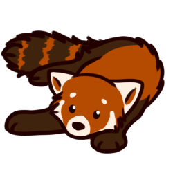

The Red Panda 

When temperatures are warm, red pandas stretch out on branches and pant to lower their body temperature
Habitat
Red pandas live in high-altitude, temperate forests with bamboo understories in the Himalayas and other high mountains. They range from northern Myanmar (Burma) to the west Sichuan and Yunnan Provinces of China. They are very skillful and acrobatic animals that predominantly stay in trees.
When temperatures are cool, red pandas curl into a tight ball to conserve body heat and energy expenditure

A red panda foraging in a tree canopy in Singapore
Diet
Bamboo constitutes about 95% of the red panda's diet. Unlike giant pandas that feed on nearly every above-ground portion of bamboo (including the culm, or woody stem), red pandas feed selectively on the most nutritious leaf tips and, when available, tender shoots. Like giant pandas, red pandas grasp plant stems using their forepaws and shear selected leaves off with their mouths. Because red pandas are obligate bamboo eaters, they are on a tight energy budget for much of the year. They may also forage for roots, succulent grasses, fruits, insects and grubs, and are known to occasionally kill and eat birds and small mammals.
Social Habits
Red pandas are solitary except during the breeding season. In human care, most breeding pairs live
together year-round. In the wild, the home range of one animal is about 1 square mile.
Red pandas are generally quiet, but subtle vocalizations—such as squeals, twitters and
huff-quacks—can be heard at close proximity. They may also hiss or grunt, and young cubs use a
whistle, or high-pitched bleat, to signal distress.

Two red pandas playing in the snow at the Cincinnati Zoo
Click to see more snow day fun!
A red panda snoozing up in the trees at the Woodland Park Zoo
Sleep Habits
In human care, red pandas can be active at any time of day but are primarily crepuscular, or most active at dawn and dusk. On average, they spend about 45 percent of the day awake and tend to be more active in cooler weather, especially during the winter mating season. In significantly cold temperatures, red pandas can become dormant, lowering their metabolic rate and raising it every few hours as they wake up to look for food.
Status: Endangered
The red panda is considered an endangered species, with less than 10,000 individuals left in the wild and captivity. The loss of nesting trees and bamboo is causing a decline in red panda populations across much of their range because their forest home is being cleared. Additionally, red pandas are often killed when they get caught in traps meant for other animals such as wild pigs and deer. They are also poached for their distinctive pelts, and red panda fur caps or hats have been found for sale.
Researchers believe that the total population of red pandas has declined by 40 percent over the past two decades